Contents
Report of the United Announcers' Theocratic
Assembly, August 9-13, 1944
Opening Session Attendance
Keynote Sounded, Accepted ■
The First Release
The Second Day, and a Demonstration
Pioneers, and the Second Release
The Third Day, and Another Demonstration 10
Some of the Convention Departments
The Fourth Day, and “This Gospel”
Released—“The Kingdom Is at Hand”
Final Day of Assembly
“The Kingdom of God Is Nigh”
How Buffalo Felt About It All
Unity Amidst a War-torn World
Tied-in United States Cities
Canada Participates
The Overcomer of Space and National
Barriers
Glorious Prospect
World-wide Report of United Announcers’
Theocratic Assembly (tabulated)
The Doctors That Oppose Vivisection
Negroes in Texas
What Gillespie of Texas Says
Is Rome Eternal and Holy?
Hayes Still in “Purgatory”
Bombs and Blessings
Published every other Wednesday by WATCHTOWER BIBLE AND TRACT SOCIETY, INC. H7 Adizns BL, Brooklyn 1, N. Y., U. S. A, OFFICERS President ■ N, H. Knorr
Secretary W. E. Van AmbuYgh
Editor Clayton J. Woodworth
Five Cents a Copy $1 a year in the United States (1.25 to Canada and all other countries
NOTICE TO SUBSCRIBERS ’ Remittances: For your own safety, remit by postal or express money order. When coin or currency Is lost ill the ordinary mails, there la no redress. Remittances from countries other than those named below may be made to the Brooklyn office, but oply by International postal money order, ’
Receipt of a new or renewal subscription will bp acknowledged only when requested. Notice of Expiration is sent with the journal one month before subscription expires. Please renew promptly to avoid loss of copies, Bend change of address direct to us rather than to the post office. Your request should reach us at least two weeks before the date of issue with which it Is to take effect. Send your old as well as the new address. Copies will not be forwarded by the post office to your new address unless extra postage Is provided by you. Published also in Greek, Portuguese, Spanish, and Ukrainian.
OFFICES FOR OTHER COUNTRIES England 34 Craven Terrace. London. W.2
Australia 2 Homebush Rd., Strathfield, N. S. W. South Africa 623 Boston House, Cape Town
Mexico Calzada Melchor Ocampo 71, Mexico, D.F. Brazil Caixa Postal 1319, Rio de Janeiro
Argentina Calle Honduras 5646-48, Buenos Aires Entered as second-class matter at Brooklyn. N. Y,. under the Act of March 3. 1379. '
In Brief
Bombs and Blessings
♦ In a recent issue the London Universe (Catholic) published on its front page the following two paragraphs;
All U. S. Airmen Are Blessed Before Flying. Every Catholic U. S. Army flier receives a priest’s blessing immediately before his plane leaves the tarmac on an operational flight. This fact was disclosed by Lord Sempill in a speech in London on Saturday. He gave credit to Fr. John E. Foley, senior U. S. Army chaplain, for having made arrangements for this spiritual comfort. He expressed the hope * that other commands might see their way to extend this privilege to Catholic men engaged in hazardous enterprises.
There you have the beginning of an operational flight. And now, for the results achieved by such a-sortie, read paragraph 2:
Cathedral in Rome’s Port Bombed. Our Lady’s Cathedral at Civitavecchia, the port of Rome, was badly damaged during a raid by United States planes, says Reuter, quoting the German news agency. The Church of St. Antony and several schools were also damaged. The Bishop’s palace, next to the cathedral, was destroyed. Mgr. Drago, Bishop of Tar-quinia and Civitavecchia, resides alternately in the two towns.
The Pope Is Told. Bishop Galeazzi, of Grosseto, along the coast about 60 miles north of Civitavecchia, visited the Holy Father last Friday, says Reuter, to give details of the recent raid by U. S. bombers.
Well, here is the question or conundrum, call it what you will, which we should like answered: If a Roman Catholic priest blesses a Roman Catholic airman before an operational* flight, and the Roman Catholic airman bombs a * Roman Catholic cathedral and a Roman Catholic bishop’s palace, and a Roman Catholic bishop reports the matter to the Roman Catholic pope, what does the Roman Catholic pope say to the Roman Catholic priest who blessed the Roman Catholic airman? Perhaps a Roman Catholic priest could give the answer.
CONSOLATION
“And in His name shall the nations hope.”—Matthew 12:21, A.S. V.
Volume XXVI Brooklyn, N. Y. Wednesday, October 25, 1944 Number 555
Report of the
United Announcers’ Theocratic Assembly
August 9-13, 1944
As held In the key city of Buffalo, N. Y.
WORLD leaders promise a divided, fighting, dying humanity a unity to come. By the grace of Jehovah God there is a righteous ruling government that spreads before the peoples of earth blessings of unbreakable unity; and not a unity to come, if you please, but unity here! The gates of that government of unity are thrown wide to receive the streams of men of good-will flowing toward it, men to whom Jehovah God has promised 'peace on earth’, (Luke 2:14; Isaiah 2:2-4) Worldly committees and commissions and conventions assemble and fuss and bicker and quarrel as to the means of gaining a unified world to come. The thousands of adherents of the already-established Theocratic Government of unity also assemble in convention, but not to formulate rules of government or to plan policies, nor to strive over these matters. Unity,' not division, distinguishes the gatherings of Jehovah’s subjects. Well exemplified was this in the recent Assembly, the United Announcers’ Theocratic Assembly, of Jehovah’s people. They met and studied and worked together, and at the close of the Assembly they departed in singleness of resolve to proclaim to others the good news concerning the perfect Government of unity already set up, to unitedly announce, "The kingdom of heaven is at hand ’.’’—Matthew 4:17.
Though world propaganda agencies grind out an endless flood of human prophecies eulogizing the postwar global organization to come by man’s creation, the solemn announcement of a heavenly ‘kingdom at hand’ still stands as the message of the hour. It is the message that directs attention to the only source of righteous and lasting government and peace, that is, Jehovah God and His King-Son Christ Jesus, the true "Higher Powers”. Men of good-will being interested in this message, they will also be interested in the message-bearers. Particularly will they delight in perusing a report of the above-mentioned Assembly, emphasizing, as it did, the Kingdom theme and its announcement. This Assembly of Jehovah’s witnesses was world-wide in scope, but we narrow our vision in this article to take in only the key city of Assembly, namely, Buffalo, New York,
The beautiful and modernly designed Buffalo Memorial Auditorium was engaged for the event. The convention organization in that city was started rolling in June, and thereafter each day saw the tempo of pre-convention activitystepped up and momentum gained until the machjne-like speed and precision needed to accomplish the work were attained. A few days before the Assembly was to convene a skeleton crew of Witnesses started to work in the Memorial Auditorium. Their zeal stirred a reporter of the Buffalo Courier Express to comment as follows:
Applying literally the old Biblical [ ?] saying that cleanliness is next to Godliness, members of the Jehovah witnesses are giving Memorial Auditorium the house-eleaning of its lifetime in preparation for their national convention which will open tomorrow, Armed with mops and pails, volunteer squads yesterday swarmed from basement to gallery of the huge convention hall, scene of many a sporting event and national assembly. They polished windows to transparent brilliancy and scrubbed the floors until they looked like reflectors. This was only the finishing touch. Other volunteer workers have been here for the last two weeks, installing special plumbing, electric fans, constructing cafeteria benches, and doing a thousand and one- other jobs.
Yet, to one arriving on Monday, August 7, the Auditorium seemed somewhat deserted. True, these few score of zealous Witnesses were busily engaged in setting up cafeteria equipment, arranging for the bookroom, and making other preparations for the operation of the various departments that play such a vital role in the Theocratic assemblies of Jehovah’s witnesses. But this handful of workers seemed lost in the expansive building that housed the bowlshaped auditorium and the lesser assembly halls. August 8 found the working corps increased, but the spacious building still clung to its air of desertion. With the dawning of August 9 and the opening day of the United Announcers’ Theocratic Assembly, what a change ! Early in the morning crowds surged around the huge structure; when the doors were thrown open to the conven-tioners they filed in and breakfasted in the hastily but efficiently organized cafeteria in the basement Exhibition Hall; and when the entrances to the auditorium seats were opened the Witnesses streamed in there for the morning session for field service. All that morning the incoming Witnesses arrived, ate, obtained territory, and departed for the field of service to sing Jehovah’s praises.
There was no way of knowing how many were there; they came and went, and returned. All that was certain was this: the first day’s attendance would be large.
As the Witnesses arrived the forces needed to operate the various departments grew. Willing volunteers registered at the Volunteer Service booth for work assignment. Thence they reported to a servant in charge, received their specific assignment, and took their place as an integral part of the. convention organization. The departments must be operating on this first day; a large crowd would be there to be accommodated; well-manned departmental forces must be quickly set up and organized to meet the unknown needs of that first day. A humanly impossible task was accomplished. Jehovah directed His servants in their duties, and each one filling his assigned place contributed to the success and smoothness of operation on that first, crucial day. Here, indeed, was unity exemplified!
Opening Session Attendance
As the time drew near for convening the afternoon session, the Witnesses active in the field began to return; those just arriving on the scene stayed. Still the streams of humanity flowed toward the massive Auditorium building. From private cars, from buses, from trains, from every means of transportation the eager delegates came. Converging on their objective they poured into the main auditorium, filled the arena floor, its wing-seats, the mezzanine, and then the first ring of balcony seats. Still the delegates came. They streamed through the many entrances to the top balcony till the last place in that tremendous crowning ring of seat sections was occupied. They overflowed the seating capacity of that great bowl-like auditorium, and the surplus spilled into the auxiliary assembly halls.
The city of Buffalo was amazed, utterly dumfounded. Had not one of their papers in mentioning conventions
CONSOLATION
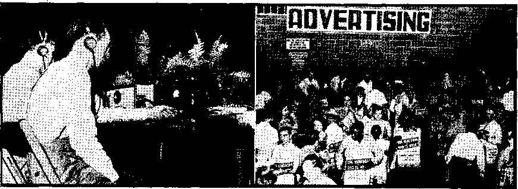
Two departments at the key city: (1.) sound; (8) advertising.
estimated no more than 3,000 delegates for the Jehovah’s witnesses’ Assembly1? Yet here the first day, the very first session of a five-day meet, the mammoth auditorium in which the city takes such pardonable pride fails to accommodate the attenders! On that first day 16,000 tax the facilities of the Auditorium.
They expectantly awaited the official opening of the 1944 Assembly. In this they were not alone. Audiences in sixteen other cities in the United States likewise sat in anticipation of this moment. A maze of telephone lines were to emanate from the key city and tie them in with it. The telephonic circuit clicked shut, seventeen audiences became as one, and the United Announcers’ Theocratic Assembly was on!
Early in the address of welcome the convention chairman, H. C. Covington, explained the title given to the Assembly, saying: “ft is united because all attending are welded together and joined as one to our.great Leader, Christ Jesus. It is an announcers1 assembly because each one is a witness, proclaimer and announcer of a vital message. Theocratic it is because it stands for the Government of the new world by Jehovah through Christ Jesus.” The speaker then traced the mushroom-like growth of these Theocratic assemblies, springing up from the 200 that attended in 1890 to the 169,000 that assembled in convention last year. "This increase shall not cease,” he declared, and next cited the angry tide of opposition this continued prosperity would cause to arise from Satan’s visible and invisible dupes. Notwithstanding, “until the final victory we are determined to maintain the war-alert, keep on the full armor of God, being armed with the ‘sword of the spirit’. There will he no relaxing or furlough-taking by the faithful.” Then, concluding on the joyful note of the bountiful assembly blessings of the five days before the convention attenders, he gave way to the president of the Watchtower Society, N. H. Knorr, who was to sound the convention theme in the keynote speech entitled “Seek Ye Eirst the Kingdom”.
Keifnote Sounded, Accepted
After waiting out the welcoming applause of the vast audience, the president began in measured tones: “Jehovah is the Father in heaven, whose name must be held sacred, in harmony with the inspired prayer: ‘Hallowed be thy name.’ No father is a better provider of all good and imedful things than Jehovah God. No family is happier and more blessed than His.” Thence he wove into the discourse the Kingdom theme, and how men counterfeit the Kingdom and try to monopolize the time and energies of mankind and hold them in subjection to Satan’s rule. But Christ Jesus spurned the “artificial, whooped-up glory" of worldly kingdoms and gave Jehovah’s kingdom the first and fullest place in His life, likening it unto “a pearl of great price”. To His disciples He fervently counseled: “Seek not ye what ye shall eat, or what ye shall drink, neither be ye of doubtful mind. For all these things do the nations of the world seek after: and your Father knoweth that ye have need of these things. But rather seek ye the kingdom of God; and all these things shall be added unto you. Fear not, little flock; for it is your Father’s good pleasure to give you the kingdom.”—Luke 12:29-32. _
Jesus set the example, He relied upon His heavenly Father for the supplying of His personal wants, He did not misuse His miraculous powers to satisfy self. Such reliance 'in God was to be a test of the faith of His followers, whom He admonished to seek the more important thing, the Kingdom, and allow bodily needs to rest in the hands of Jehovah. All this was capably summed up in modern setting, as follows:
At this end of the world, with its perilous times, when food rationing is in practice, and even clothing must be bought on points, and prices hit the ceiling for rents and housing and other life-necessaries, it is hard not to worry about these things. It calls for the highest confidence in the Lord not to make these things the chief objective on one’s program but to keep on giying one’s chief thought and attention to serving God and His Theocracy. The former is a selfish pursuit common to all the world; but the latter is unselfish. The former is a self-service, an idolizing of self, and akin to demonism; the latter is a service of the interests of God’s Righteous Government. We cannot divide ourselves between both pursuits; we cannot be conformed to this world and seek after the things it worries about, without shoving God’s kingdom into the background as of less value than self. There are only the two masters: and where these masters do not even co-operate, but are at deadly enmity with each other, we cannot love and serve both at the same time and receive reward from both. On this critical matter Jesus said: “No man can serve two masters: for either he will hate the one, and love the other; or else he will hold to the one, and despise the other. [Likewise:] Ye cannot serve God and mammon."
Pursuing this theme of Kingdom first’ the speaker showed how it must be sought, how the Kingdom-seeker must stay on the job, and that, so doing, the faith-proving one would find that the great Provider would care for his physical wants and add bounteous feastings of all-important spiritual food. In closing he declared with appropriate force: “The Theocratic Government is at hand, and the ‘old world’ organization of Satan the Devil is facing early destruction. A decisive choice must be made between the everlasting Government that will dominate Jehovah’s universe and the swiftly outgoing old world. For those who love Him with all their heart and soul there is but one choice. It is the one they made at their consecration to Him, namely, ‘Seek ye first the kingdom of God.’” (Full text of this keynote speech will be found in the September 15, 1944, issue of The Watchtower.)
Was the keynote thus sounded acceptable to the assembled thousands ? Indeed it was, judging by the vigorous applause, round after round of it, that punctuated the very capable delivery of the hourlong discourse. Particularly heart-thrilling was it to the more than 2,000 pioneers who listened at the key city; they could appreciate to the fullest the care of the heavenly Father. Had not they abandoned the pursuit of material things to ‘seek first the Kingdom’? and had not the promises of divine care rehearsed in this stirring talk been fulfilled in their individual cases?
The First Release
The hands of the large clock suspended high above the arena floor now pointed to 4:30, and time for the discourse, “Song of Kingdom Service,” by a director of the Society, F. W. Franz. Song did not originate with man, but long before his creation hosts in heaven gave voice to songs of praise to Jehovah; an angelic chorus heralded the birth of the babe Jesus two thousand years ago; and evidence was presented showing that on occasion the man Christ Jesus made vocal melody in unison with His disciples. Hence the inescapable conclusion reached was that, in addition to the primary singing out of the Kingdom tidings and the gladsome song of the Kingdom as at hand, it is proper and pleasing to God for His.earthly servants to lift their voices in literal song, song having as its theme the Kingdom and its service. The argument 'fully developed, the surprise came: As the speaker announced a provision of Jehovah to give practical force to the right principle of Kingdom singing, Mr. Knorr stepped forward and placed a red booklet in his hand. A 64-page Kingdom Service Song Book! This first release touched off a grand burst of applause, which continued as it was held aloft and displayed. Further joyous hand-clappings greeted the announcement that this new provision would be used at the weekly service meetings of Jehovah’s witnesses. On this high pitch of excitement the opening , session closed, the hookup ended, and the dismissed assemblies eagerly filed by the ushers distributing the first release.
It was not long in being put to use, A scant two hours separated the afternoon and evening sessions, and, what with the hustle and bustle of getting the evening meal in the cafeteria and the flurry of delegates still keyed up by the afternoon’s fast-moving events, this short interim soon passed. Once more the Witnesses were seated in the auditorium. Then, for fifteen minutes, they reveled in joyful song. With the bright. red songbook in hand, and accompanied by an orchestra of fifty-four musicians from many different states, the happy announcers united their voices in gladsome melodies of Kingdom service. The congregational singing was followed by the programed discourses, four of them, on the subjects “A Feast of Fat Things”, “Prayer and the Christian,” “Prayer and The Theocracy,” and “Teach Me to Do Thy Will”. All these discourses were based on Watchtower articles published during the past year, and the timely review, followed by prayer, closed the opening day of the United Announcers’ Assembly.
Shortly thereafter the throngs had dwindled away and only the crew of night watchmen remained. Little groups fanned out in all directions to reach their respective lodgings. Some few had to search for quarters, even at the late hour. The problem of rooming facilities was perhaps the convention’s greatest. The American Legion was holding a state convention in the city during the Witnesses’ Assembly, and through the Buffalo Convention Bureau they had contracted for 2,000 hotel rooms, or all those ordinarily available for convention purposes. This left only the homes of the people as a source for the bulk of the rooms needed. It meant a thorough scouring of the city in a house-to-house canvass. Six times the entire city was covered, and some sections were gone over a seventh; but results were obtained in the end. Not just results in so far as finding accommodations for the convention delegates was concerned, but something else was accomplished in addition thereto.
Hotels, in the main, had turned down the Witnesses and chosen the Legion. So the Witnesses turned to the homes of the common people, who did more than supply housing facilities: they heard the Kingdom message gladly. Apparently the Lord directed this matter, as all others. If the hotels had opened their doors to the Witnesses these ministers would have missed many an opportunity to witness to householders. Not only was a verbal witness to the Kingdom given in these hundreds of Buffalo residences, but in some studies were actually started and later turned over to the local company of Jehovah’s witnesses to continue after the delegates departed. Thousands of Buffalbans became personally acquainted with the Witnesses. They were impressed. They realized many of the things they had heard about them were false. Some refused to accept any rental fee at the close of the Assembly. Others provided breakfasts for the Witnesses, free of charge. And many of these impressed householders attended some of the Assembly sessions. The situation worked even to a testimony to the hotels. Many of them did have a sprinkling of Witnesses, along with a drove of Legionnaires. The contrast was noteworthy. The Witnesses were quiet, courteous, considerate, and minded their own business ; whereas the boisterous Legionnaires. made themselves obnoxious by their coarse and ribald “jokes” and general air of self-importance and arrogance. Many hotel employees and managers expressed their disgust with them, and their appreciation of Jehovah’s witnesses. ■
The Second Day, and a Demonstration
Back to the Assembly at the Memorial Auditorium, and the second day. The day’s activity started off with the morning assembly for field service, as did each of the five days. These half-hour periods were given over to discussion of daily Bible texts, field-service experiences, and announcements pertaining to service arrangements for the day. These early sessions were particularly enlivened by the thrilling experiences of ministers graduated from the Watchtower Bible College of Gilead, which institution is located at South Lansing, New York. Many of their accounts of activity were of their aiding the Spanishspeaking people of Texas border towns. The experiences revealed the patience and persistence needed to win the confidence of the fear-ridden Mexican people, and reports of the large numbers of Bible studies started with these truth-hungry ones drew approving applause from the audience. In the course of the Assembly forty-one of these Gilead-trained special publishers brightened the program with reports from the front lines of battle of truth against religious ffes. All the evidence pointed to the fact that they had profited much from the training they had received at Gilead and that, they were, as a result, better soldiers of the Lord. •
Following the morning assembly of. Thursday, August 10, the announcers were dismissed to the field to proclaim the good news of the Kingdom and to extend to people of good-will invitations to attend the Assembly sessions, especially the public lecture scheduled for Sunday afternoon. Returning to the Auditorium and refreshing themselves by partaking of the wholesome temporal food available in the cafeteria, they again filed into the auditorium. Many listened in the spacious basement, while other hundreds remained, outside and heard over strategically placed loudspeakers. The 16,000 that met for the opening session the day before had now grown to 20,000. For two hours they sat quietly and listened to discussions on “The Publisher in Theocratic Service”, “Duties of the Servant to the Brethren,” and “Company Organization and Servants’ Responsibility”. .
The first talk drove hard on a vital point: the need of everyone seeking divine approval to be a publisher in the field of service. That publishing work is done by ministering and preaching “publicly, and from house to house”, which constitutes a revival of preaching methods used by the perfect example, Christ Jesus, and His apostles and early disciples. That way long ago blazed by such reliable examples of faithfulness Jehovah’s1 witnesses today will follow until the testimony work is finished, come what may in the way of cruel persecu-
tion. .The two discourses that followed ; outlined .the proper organization and the duties of various appointed servants, that as the individual publishers keep covenant by preaching they may work . in unity one with the other. In all this organized and unified activity the primary and all-essential requirement was forcefully shown to be the unifying spirit of Jehovah God.
The Assembly convening for the evening session after a two-hour intermission, the theme of service was further stressed, but this time in a different and unique way. The convention program listed it as a “Service Meeting”. It was a demonstration, a model service meeting. It was designed to aid the companies of Jehovah’s witnesses in their conduct of the weekly service meeting wherein they organize the service work in their local fields of activity. It was packed with practical instruction, and as -the various servants of this model company conducted their respective portions of the demonstration, and as the audience on the stage responded to questions propounded, many of the onlookers made mental notes as to ways of more nearly conforming to this model meeting in their local companies. But demonstrations such as this have been offered before at Theocratic assemblies. Wherein did this one surpass all previous ones, and stand out as unique?
The setting made the difference. The 15-minute song-fest opening the evening session had concluded. The model-service meeting audience of 32 persons had taken their seats on the platform. The demonstration was due to begin. But, what’s this? Without warning all lights except one went out. The vast interior of the huge auditorium was plunged into blackness, with the exception of the small area illuminated by the one light yet shining. And this lone light beamed its rays down upon the little group on the stage; from its suspended position above the stage it sent down a cone of light that threw the model company into sharp relief while excluding from its revealing rays the thousands also present in the auditorium. The vast assemblage enveloped in blackness seemed far removed, no longer there. Even the convention seemed to take time out. For the hour that the demonstration lasted it seemed that the con-ventioners were transported to some average-size company of Jehovah’s witnesses in the South; or middle west; or some other place, any other place, in the country. It was just any typical alert company of Witnesses having their weekly service meeting. And there, in that island of brilliant light in the midst of a sea of blackness, this superb demonstration thrilled beyond words the thousands of onlookers that peered in upon the little company meeting. It made a deep and permanent impression, and, along with a similarly presented demonstration on Friday evening of a model Theocratic ministry school, was among the most-talked-of features of the entire Assembly.
Pioneers, and the Second Release
But now all lights flash on again, and the spell is broken. Nevertheless, the grand climax for this evening session is still ahead. For a second time the telephonic circuit is closed and sixteen other cities are joined with the key city. The president is to speak on “Field Blessings and Privileges”. His remarks were to be addressed specifically to the pioneers, all of whom at the key city (more than 2,800) were assembled in seats on the arena floor immediately in front of the speaker’s platform.
The president advanced to the microphone and began. For one hour he painted a stirring word picture of the increase of Kingdom activity, specially as to the pioneers’ part therein. The expansion of the work in the foreign fields-where Gilead graduates had been sent was particularly thrilling. In October, 1943, when twelve were sent to Cuba there were then in that land only 648 publishers out of the 4,000,000 population. Now, during the last four months, as a result of the intensive activity of the Gilead graduates, there had been an average of 1,030 publishers. These twelve special publishers conduct 207 studies weekly, with 469 persons in attendance. Some of the people progressed in six months from a book placement to being full-time workers themselves. In Puerto Bico the four Gilead graduates sent there placed 2,947 books m four months, and conduct 86 studies a week, with 178 persons in attendance. Pioneers sent from this country are even teaching people to read and write; “which is something the priests have never done,” the speaker added, to the amusement of those assembled, who really appreciate and favor the principle of “free education”.
Then it happened, that climactic announcement that overshadowed all that had gone before and threw the vast audience into such thunderous applause. To the amazement and unspeakable joy of the united announcers, the president declared that henceforth one of the “field blessings and privileges” to be enjoyed by all Theocratic publishers would be the distribution of the Watchtower edition of the American Standard Version Bible. As he held it aloft the roar of forty thousand clapping hands filled the Auditorium, and as he proceeded to outline the history of this version and its advantages, and especially the statement that the Watchtower edition was the first to include a 95-page cyclopedic concordance, repeated applause showed hearty acceptance of this new instrument for field service. And when all this was capped by the announcement that all pioneers assembled on the arena floor were to be presented a personal copy free, shouts of sheer joy burst from their lips, accompanied by happy applause from all others present. In orderly rows the pioneers filed out, receiving the precious gift with happy smiles and eyes shining with joy. So closed a day of inexpressible delight, the second day of Theocratic assembly.
The Third Day, and
- Another Demonstration
The third day dawned clear, and 9:00 a.m. found the conventioners once more in the auditorium for field service instructions for the day. More newcomers were on hand, and the reinforced army of Witnesses sallied forth to step up the tempo of the Kingdom-announcement work and also the advertising of the public meeting on Sunday. That afternoon, before an audience of 22,000, a comprehensive survey was given by six speakers on the subject of Jehovah’s spirit. The symposium consisted of talks on “The Spirit", "Spiritual Begetting,” “Why Few Are Chosen of Many Called,” "The Spirit Advocate,” “The Anointing,” and “The Invited Ones”, This “Latest Eeview”, as the program listed it, showed how Jehovah's spirit operates on both the anointed remnant of Christ’s body-members and the “other sheep”, who gain life eternal on earth. The smooth-running Assembly was itself a tangible demonstration of Jehovah’s Spirit, or active force, upon His people, be they of the heavenly or the earthly class.
The evening session focused attention on the Course in Theocratic Ministry, which is regularly conducted by the companies of Jehovah’s witnesses. The first forty-five minutes were consumed by a discourse on “The Value of Theocratic Ministry”. The speaker showed how the course had benefited many individually, enabling them to speak more effectively and increase their efficiency in the witness work. Evidence from' actual records was produced to show the stimulus the course had imparted to the gospel-preaching activity, especially in the vital fields of the back-call work and the book-study work. It was stated in conclusion that “the course in Theocratic ministry is, in part, an answer to a prayer uttered by David thousands of
years ago, a prayer oft repeated by Jehovah’s witnesses in these perilous ‘last days’, a prayer oft repeated by Jehovah’s witnesses in this year 1944. What is that prayer? Look, and see for yourself!” With that the speaker gestured toward the streaming banner above the platform, where, on a background of pure white, the red- and silver-spangled letters glittered and gleamed for all to read: “Teach me to do thy will; for thou art my God.” (Psalm 143:10) It was the yeartext for 1944. And that was “the value of Theocratic ‘ ministry”; that is, it was one of the aids in teaching Jehovah’s witnesses to do His will.
Then the highlight of the evening session took over. In setting like that of the model service meeting the evening previous, a demonstration of the proper conduct of the Theocratic ministry course was given. Its delightfulness and instructiveness equaled that gained from the other demonstration. Nineteen men and women were used. The roll was called, a review on the previous week’s instruction talk conducted, and an instruction talk on “New World Theocratic Concordance” followed. Next three student speakers discoursed on “Free Education”, “Trading in Pounds,” and “Rebecca”. Excellent though they were, the school instructor noted points for improvement. The course concluded. All this had taken place in the field of bright light shining on the platform. The vast convention audience was invisible, but from time to time, as occasion prompted, applause or friendly laughter from the enveloping blackness reminded the platform group of the audience’s presence.
Some of the Convention Departments
The close of this third day found all departments functioning with Theocratic smoothness. All raggedness of operation and minor perplexities of the opening day had been ironed out. Brief mention of some of the departments will be of interest. Volunteer service supplied the man-power. They registered and assigned upward of 5,500. Combined cafeteria activities drew 3,000 of these convention workers. Ushering was next, having 1,300. The remaining 1,200 were used in such departments as bookroom, territory, service, checkroom, hospital, advertising, cleaning, sound, and others.
A glance at the largest first, the cafeteria. Actually, it was seventeen little cafeteria-units blended into one large whole. There were seventeen complete serving places, with seventeen lines of people passing through, a line to each unit. The cafeteria served 11,000 con-ventioners an hour. Here are the quantities of a few of the items used: Beef, 12,000 pounds; ham, 1,568 pounds; fish, 5,000 pounds; cheese, 3,208 pounds; bread, 9,822 pounds; milk, 23,642 quarts; vegetables, 1,908 bushels; cooked vegetables, 12,778 quarts; eggs, 28,800; and 4,785 pies.
The equipment required by the sound department will surprise many. There were sixteen rooms, including the main auditorium, that were equipped with loud-speakers so that the workers and others could hear all the convention proceedings. In addition, the area around the outside of the building was covered by the use of sound trucks and outside horns mounted on the building. (Incidentally, while Buffalo newspapers were busy reporting that the mayor had ordered the removal of all outside loudspeakers the mayor was dictating a very fine letter to the convention officials giving his approval of the use of such equipment.) In all, 108 loud-speakers were used, of ten different types, shapes and sizes. Eight microphones were required.
The territory department assigned for witnessing, either by house-to-house visiting or street witnessing, 2,692 territories, some as far out as Niagara Falls, 28 miles distant. Each territory accommodated a group of four or five workers. There was a shortage of territory. Most of the assignments were out early during the Assembly, and some residential
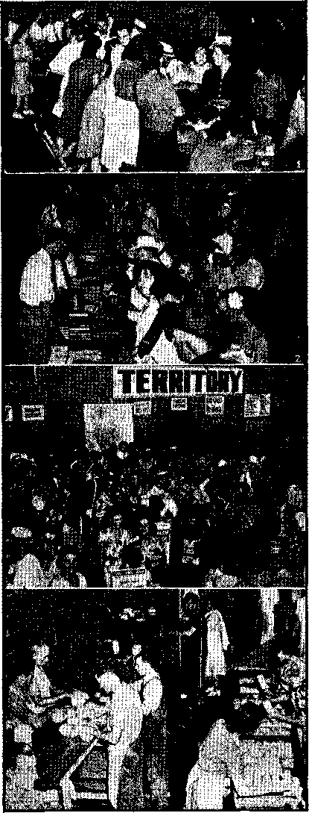
Some of the convention departments during rush hours: (1) rooming assignment; (2) bookroom; (3) territory; and (4) dish-cleaning crew,
districts were worked three or four times during the five days. A report of placements will be given later.
The bookroom was a very busy place, as might be expected in view of the intensive and general participation in field service by the Witnesses. It placed with the publishers 40,000 Kingdom News, 37,485 magazines (Consolation and The Watchtower), 53,593 bound books, 18,268 Bibles, and 276,475 booklets. These figures include releases at the Assembly itself, as well as supplies placed with publishers for field distribution. In passing, it is interesting to note that the bookroom distinguished itself by starting a new publisher in the witness work. The following report from one of the bookroom workers explains:
A man, past middle age, made his way to the bookroom. Singling out one individual he stated that he just came from upstairs and had been listening to the program. There was something said about “going to the field” and he wanted to know more about that. He was questioned a little and supplied the information that he was a farmer from a rural village in Ontario, Canada, and that some years ago he “bought” some books. A couple of times after that Jehovah’s witnesses had called on him. He hadn’t seen anyone for over two years now but had just read in the paper about a big convention of Jehovah’s witnesses in Buffalo and decided to come. He was told of the work, whereupon he stated that he better get into it. He was supplied with the current campaign literature and was sent to the territory department to see if he could bo included in some group for group witnessing.
Some two or three hours later he again appeared and singled out the same person with whom he had previously talked. He was quite enthusiastic, having “sold” all his books. He asked what to do next. Questioning showed that in some manner he missed being put into a group and inasmuch as nobody seemed to pay any attention to him he decided to “go it alone”. He had boarded a streetear and rode to where the houses looked like “common people”, and then started in. He continued
until his literature was exhausted. He 'was shown how to make out a report, and later his name was given to an Ontario publisher for a back-call.
The Fourth Day, and “This Gospel’*
Now back to the convention program. It is Saturday afternoon. The united announcers have returned from Kingdom service, had their midday meal in the spacious cafeteria in the basement, and are now waiting expectantly for the session to begin. The main auditorium and the auxiliary halls are packed, the cafeteria basement is filled, and those seated and standing around the outside of the building number into the thousands. All totaled, the fourth day of Theocratic Assembly finds the attendance figure at a new high of 25,000. They have assembled in eagerness to hear the main talk of the afternoon, an hour lecture by the president on “This Gospel Shall Be Preached”. Preliminary thereto the conventioners listened with interest to two discourses, “The Need of the Present Prodigal” and “The Prodigal’s Return”, both of which based themselves upon articles published in The Watchtower,
Four o’clock in the afternoon, August 12,1944, and once again the sprawling inter-city network binds as one seventeen audiences in the United States. Opening with the statement “Jehovah is the Sender of the gospel”, the Society’s president unfolded a powerful argument as to the urgency of gospel-preaching. Matching in power was the stirring delivery of the speech, and the audience made known its appreciation of both by repeated and sustained bursts of applause. Christ Jesus on earth followed the occupation of gospel-preaching, so did His apostles and early disciples, and on down through the centuries the Kingdom gospel was proclaimed, though weakly at times. “Yet,” the speaker declared, “this is not what Jesus referred to when He uttered the stirring phrase: ‘And this gospel of the kingdom ;shall be preached in all the world for a witness unto all nations; and then shall the end come.’” (Matthew 24:14) He proceeded -to show how the setting imparted to the expression “this gospel” a special and timely meaning. “This gospel” or “good news” was concerning the Kingdom as having come, as being set up, completely established, and at hand now!
“This gospel preaching must be done now during this day of Jehovah, during this time of His grace between the ‘war in heaven’ and the final battle of Armageddon, by the inserting of which break Jehovah God has shortened the days of the ‘great tribulation’. For the elect’s sake He has shortened it.” Why? That they might preach “this gospel”. Reviewing past persecution and trials yet ahead of the gospel-proclaimers, the speaker emphatically questioned, “Shall our hope of help be in the ‘earth’ [the more stable and anti-radical element of human society], particularly its postwar international formation?” “No! Jehovah’s Theocracy be ever our help I” cried out the speaker in dynamic answer, and a thunderous roar of applause signified approval by the listening thousands. Shortly thereafter the following Resolution was proposed:
Studied in the light of Christ Jesus’ prophecy concerning the signs that would mark the end of the world, all the events of this world and also the experiences of Jesus’ true followers make certain that in A.D. 1914 Satan the Devil’s uninterrupted rule ended and Jehovah’s Theocratic Government and the authority of His Christ began;
Despite the most intensive activity of Jehovah’s consecrated people during the past thirty years to publish the kingdom of God by His Christ as mankind’s sole hope, the message of the Kingdom continues to be rejected by the world rulers. Already, before end of the global war, the world leaders and governors are proposing for the postwar epoch a new or revised scheme of international collaboration for world peace, prosperity and security; and this they do in defiance of the established kingdom of God;
Therefore, be it resolved : '
That the kingdom of God by His Son Christ Jesus is the Government of the new world of righteousness? and it alone is the hope of all human creatures desiring everlasting life, unbroken tranquillity, security against all aggression by the Devil’s organization visible and invisible, and the full freedom on earth of the sons of God?
That the inspired Word of God foretells the revival after this total war of a manmade arrangement for the political, economic and religious co-operation of the nations? and that this will divert mankind’s attention away from God’s kingdom and will attempt to stand in the holy place of that Righteous Government, and hence will be an “abomination” in God’s sight and will bring desolation upon all nations in expression of His wrath ?
That we, as Jehovah’s witnesses, will continue to give our unswerving allegiance to God’s kingdom;
That the prophetic command of Christ Jesus still stands in effect, to wit, “This gospel of the kingdom shall be preached in all the world for a witness unto all nations”;
That we, as those who are fully consecrated to God to do His will in the footsteps of Christ Jesus, recognize our obligation as ministers of the Kingdom gospel; and that, therefore, down to the final end of Satan’s organization and its postwar creation for dominating humankind, we will keep integrity by continuing to advocate the kingdom of God and never slacking in preaching to all nations that “The kingdom is at hand”.
Released—“The Kingdom Is at Hand”
This Resolution was adopted by an overwhelming acclamation, followed by sustained hand-clapping. Loud and long though the applause was, it was dwarfed by that which burst like an explosion from the vast audience in and around the Auditorium when the president announced the release of a new book entitled "The Kingdom Is at- Hand". A free copy was obtainable from the ushers by all above five years of age and who had adopted the Resolution, which announcement occasioned another outburst of gleeful applause. In an amazingly short time everyone had his copy and was deeply absorbed in an excited scanning of its pages. Its beauty, too, stirred admiration; particularly the front cover with its ram’s horn heralding forth the electrifying pronouncement “The kingdom is at hand”, all of which was enhanced by its being stamped in gold on a deep shade of red cloth. A treasure indeed, and one to be proudly displayed in sounding the Kingdom announcement in all the habitable earth. (The discourse on “This Gospel Shall Be Preached” you can read in The Watchtower, September 1, 1944.)
The evening session, which went over the wires to the sixteen convention cities in the United States, exhibited living examples of “Faithful Endurance for the Kingdom”. It was an inspiration for the young “Jonadabs”, who had read much in the Society’s publications about a faithful remnant in the time of the end, to see on the platform seven men whose years of patient Kingdom service totaled 285. The first to speak was C. A. Wise, who recalled in firm, vigorous tones, despite his 81 years (55 in the truth), his first assembly 51 years ago, in Chicago, Ill., which was attended by a handful of 200 persons. W. E. Van Amburgh, 81-year-old secretary-treasurer of the. Society and 49 years in the King’s service, recalled that at the time when he started serving Jehovah there were 27 companies of Witnesses in the United States. “Now there are over 3,000,” he added, In touching simplicity he impressed his listeners with his long years of association with the organization by relating a conversation at this Assembly: “One came to me and said, ‘Remember when you used to carry me around on your shoulder? This is my granddaughter. She is trying to be a pioneer.’ ”
The five remaining ones followed with admonitions to continued faithfulness, regardless of the time that might be involved. They were C. J. Woodworth,

Key-city scenes: (1) Preparing placards for advertisers; (2) young Jonadabs “to the work”; (3) an ‘ambassador to the homes’; (4) a young witness retrieves magazine stolen by a four-against-one clique of swaggering bullies parading as an “American” legion (the incident mentioned in the account). One of the camera-shy peace disturbers has retreated; three remain, unaware of the photographer. (5) With back turned on religion, this witness ‘holds forth the word of life’.
74-year-old editor of Consolation (49 years in the truth); H. H. Riemer, assistant secretary-treasurer of the Society (41 years in the truth); M. A. Howlett, radio servant of station WBBR in Brooklyn, N.Y. (32 years in the truth); R. E. Paine, faithful production worker in the Society’s publishing plant (31 years in the truth); and T. J. Sullivan, a director of the Society (28 years in the truth). All these faithful endurers were introduced by N. H. Knorr, and as he introduced F. W. Franz, a director of the Society, as the next speaker he explained that Mr. Franz had devoted himself to Kingdom service for the past 31 years. Then, to the delight and amusement of the audience, Mr. Franz caught the coat sleeve of the president and detained him as he remarked: “You are not so young yourself. I remember a day 21 years ago, July 4, 1923, when I preached a baptism talk on the occasion that you were immersed in the river near Allentown, Pennsylvania, as a lad 18 years old.” Gleeful applause ensued.
Thence the speaker .just introduced discussed the absorbingly interesting fulfillment of the parable of the marriage feast, recorded at Matthew 22:1-14. It was shown how .Jehovah, the Great King, had sent out His servants with invitations to participate in the Kingdom and its feastings, and how the feasters must wear the wedding garment of faithful service ami always put the Kingdom interests first. At the conclusion of this discourse (published in full in the October 1 Watchtower) the president added an anticlimax by releasing a Study Questions booklet to aid in the field work with the new book, “The Kingdom Is at Hand". On this joyous note the fourth day of the United Announcers’ Assembly came to a close.
Final Day of Assembly
Dawned the fifth and final day. And it was a full one. Early in the morning the program of events started with an immersion service, at 8:00 a.m. After the discourse 588 consecrated persons symbolized their agreement to do God’s will by water immersion. (The total number immersed in the 17 United States cities was 2,107.) Close behind this session came the regular morning assembly for field service, and thence to the territories for a final fling at advertising the public meeting and the lecture “The Kingdom of God Is Nigh”.
The advertising campaign in Buffalo was well done. Nearly7 3,000 sets of placards for information walkers were in use during the five days, upward of 3,000 signs were placed in store windows and other strategic places, buses and streetears carried the announcement, and to clinch the matter the Witnesses distributed 1,000,000 fliers in Buffalo and the surrounding villages and towns. For the most part the Theocratic advertisers ■were well received. What little trouble did develop was primarily brewed by the American Legion conventioners. But their record of the past few years makes un-American conduct from these rabblerousing show-offs the expected thing.
Being present in small numbers, however, these pseudo-Americans confined their deeds to minor annoyances and, in one instance, a hit-and-run assault on a 15-year-old boy. The lad was witnessing on the street corner when he was felled by an unexpected blow. The Legionnaire kept going, and was rewarded for his cowardice by the coarse guffaw’s of his buddies. The boy7 underwent treatment at a hospital. Another instance: A boy7 was displaying the Watchtower magazine and it was snatched by one of a group of four Legionnaires. They walked on; the young Witness gave chase*Overtaking them, he made strong objections and took hold of the journal. A mild tug-o’-war ensued, but as one, and then one more, of the Legionnaires left, and only two remained, the odds 'were not favorable enough and the two retreated, leaving the lad with his magazine. In view of this typical Legion trait, it is with an indulgent grin that the Witnesses read their published threat that they were “ready to move in and see just what is going on down in the Auditorium”? They did not come down. One of them was heard to say: “We cannot do anything with them. They outnumber us four to one.” So the swaggering Legion switched the odds in their favor by such tactics as four of them tackling one isolated Witness on the street, and selected as that one a mere lad. They are beneath even the contempt of real men and women. Back to Memorial Auditorium.
Because of the large Polish population in Buffalo a Polish meeting was held in the Assembly Hall of the Auditorium, at 1:00 p.m. The main afternoon session convened at 2 o’clock. Songs and experiences and two discourses, “Treasure in Earthen Vessels” and “The Death of the Firstborn”, both based on Watchtower
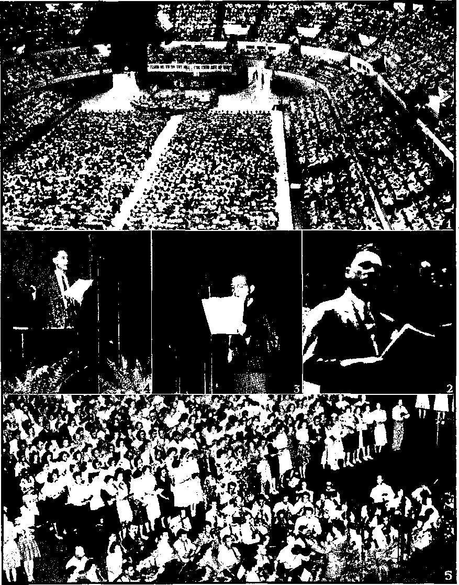
(.1) Maiti auditorium packed. (2) (’hairinaii Covington opens Assembly, (3) President Knorr sounds the keynote, and ( 1) song conductor K W. Franz releases new songbook, (b) The songhook in use, SUPPLEMENT TO CONSOLATION NO. 655 17
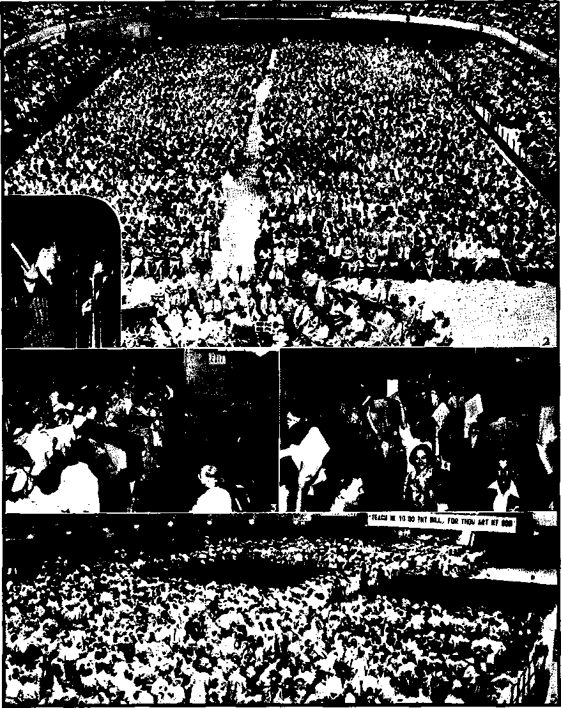
io SUPPLEMENT TO CONSOLATION
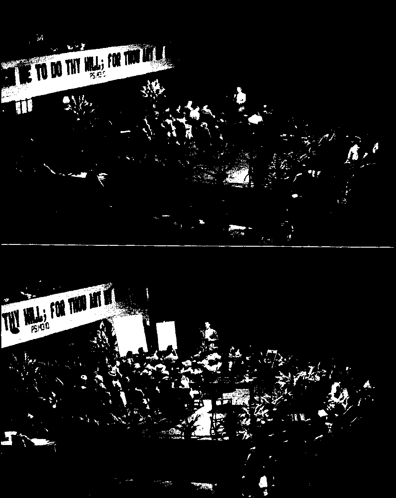
These two photographs show somewhat the dramatic setting of the demonstrations that so fascinated the audience at the key city. The top one, the ministry course demonstration, shows the school servant presenting the instruction talk. The bottom picture was snapped during the model service meeting.
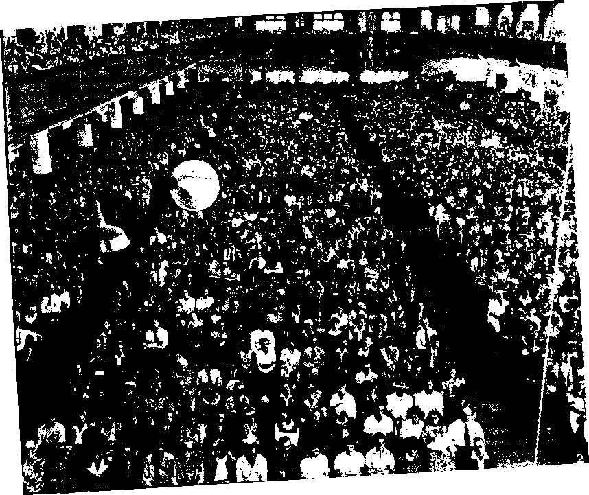
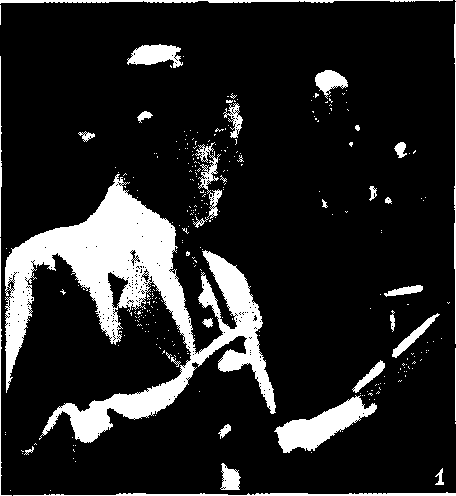
-
(J) The president delivering “The Kingdom of God Is Nigh”. (2) 8,1)00 listening in Los Angeles and (3) 5,500 in Milwaukee. (4) Part of overflow crowd in Buffalo listening at outside loud-speakers, and (5) Buffalo Memorial Auditorium packed out.
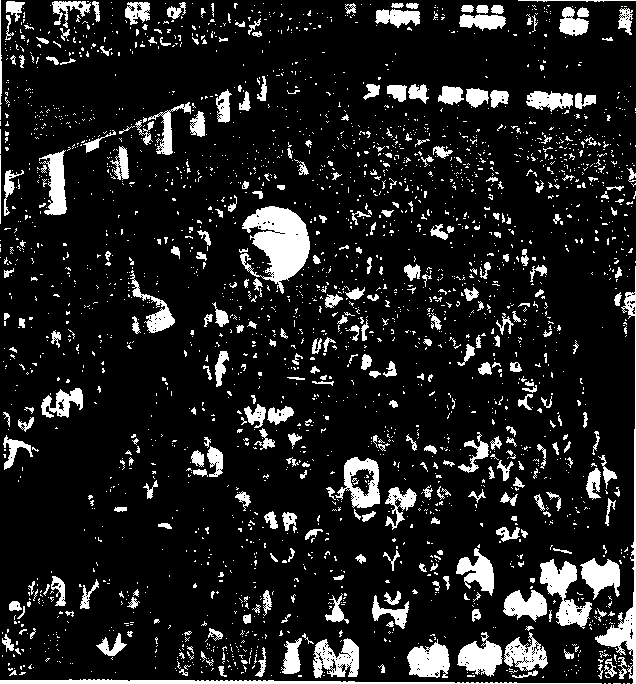
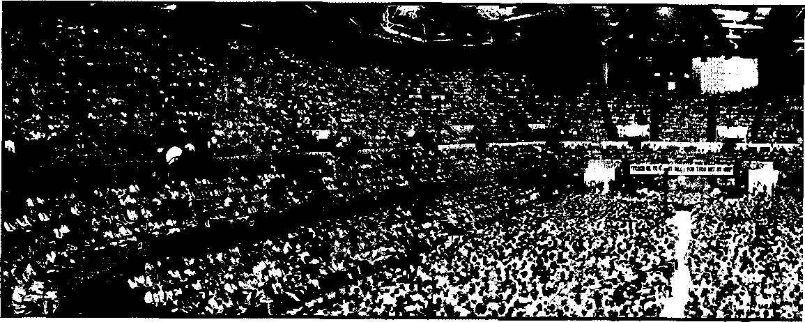
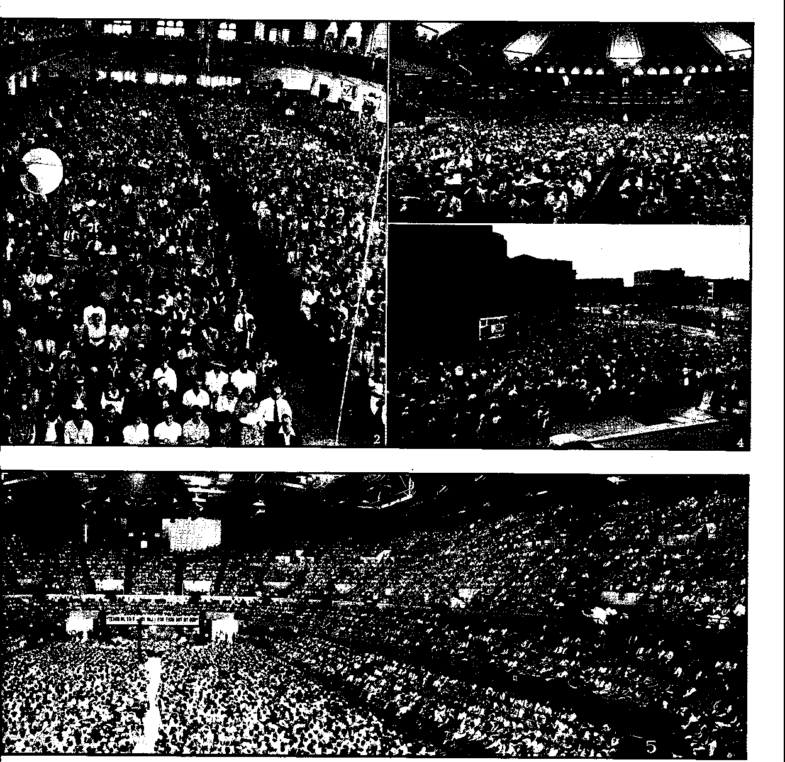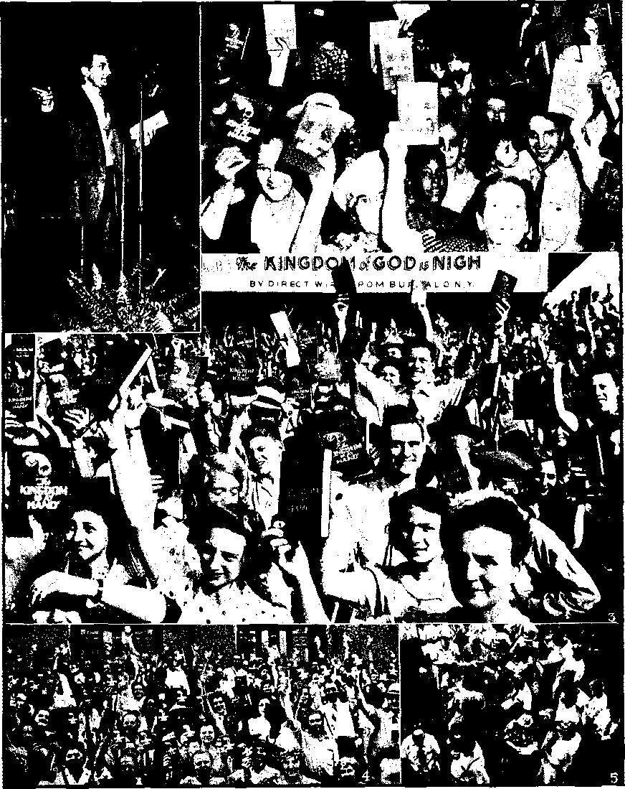
(1) President releases new book at the key city; (2) its joyful reception there. (3) Happy throngs at Atlanta, Ga., assembly display “The Kingdom Is at Hand”. (4) In Buffalo the announcers pour from the Auditorium with the new treasure held high, and (5) are soon off in little groups examining it.
99 SUPPLEMENT TO CONSOLATION
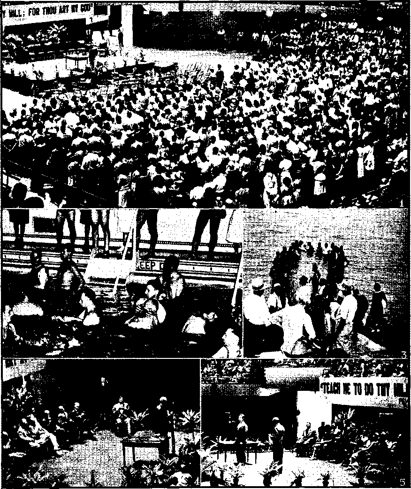
(1) Baptism talk at Buffalo, with the immersion candidates standing just prior to leaving for the places of water immersion. (2) Immersing the 490 white witnesses in a swimming pool, and (3) the 98 colored in Lake Erie, (4) “Faithful Endurance for the Kingdom” session. Speaking is W. E. Van Amburgh; seated, first row, left to right, M. A. Howlett, H. II. Riemer, T. J. Sullivan, C. A. Wise, R. E. Paine, and C. J. Woodworth; second row, F. W. Franz. N. IL Knorr, who acted as chairman, is seated between the speaker and the front row. (5) Experience meeting, with Gileadites.
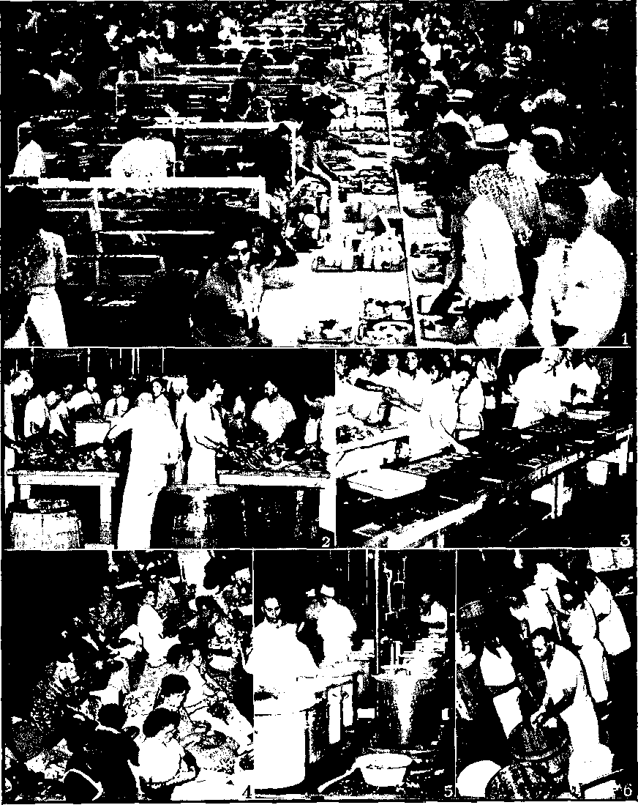
Cafeteria scenes: (11 Some of the 17 cafeteria service-men m action; (2) ‘"‘irioat on the table’' for hardworking united announcers; (3) ha mb u refer department; (4) a handful of the 3,000 cafeteria workers '‘hard al. it"; (">) cooking ranges; and (ft) fruit punch in the making (50 barrels were used).
«■».« SUPPLEMENT TO CONSOLATION
articles, carried the session along to 3: 15 p.m. A 45-minute intermission, then —“The Kingdom of God Is Nigh”! The anticipated hour had arrived, and the vast audience of 30,000 at Buffalo and the sixteen tied-in audiences in other cities quieted themselves into expectant attention.
“The Kingdom of God Is Nigh
The president begins to speak: “As if by a resurrection out of a dead past of nineteen centuries ago the cry again goes forth as a challenge to all the world, ‘The kingdom of God is nigh at hand.’ ” (Luke 21.: 31) The speaker shows that the cry arises from Christians, Jehovah’s witnesses. The message, first sounded by Jesus when on earth and by His followers then, was silenced; but not to be so for ever. The pile of related facts in fulfillment of Bible prophecy accumulated as the talk unfolded and aU pointed to one inescapable conclusion, namely, “The kingdom of God is nigh at hand.” Hence now is the time to catch up the cry out of the dim past and herald it forth with all zeal and faithfulness. Man’s hope, to be realized, must be in it, and not in a postwar governmental creation by men. Religion’s apostasy and opposition to the Kingdom announcement were shown. Yet, “The sign of the preaching of the kingdom of God as at hand will continue being presented from house to house until Satan’s heavens and earth meet their final end, soon!” The resounding cheers that greeted this emphatic declaration voiced the determination of the assembled united announcers to do that very thing. In a whirlwind finish the mighty argument swept aside as an illusion and snare any man-made “peace and safety” organizations of the future, called for a heeding of the words of Jehovah’s greatest prophet, Christ Jesus, for guidance, aqd in forceful phrase of warning drew attention to the fact that “the ‘time of the end’ is running out!” Events would climax in Armageddon and destruction for Satan and his organization, visible and invisible. A few well-turned phrases painted glorious Kingdom conditions, and the grand finale came with the speaker’s words:
Behold now all the signs that God’s glorious Government by his Son is at hand. Look up above earth’s debased conditions and turmoil, and rejoice at the everlasting deliverance just ahead. Study more about that blessed Theocratic Government daily; fix your affections upon it; and join in the joyous announcement: “The kingdom of God is nigh at hand.”
The speech was then released in booklet form, and free copies presented to those in attendance. Thousands heard it delivered, and applause rang out long and loud as its powerful and convincing arguments were driven home. By Jehovah’s grace, millions will have the privilege of reading it.
The Assembly soon entered into its closing minutes. The evening session brought talks on “Regeneration of the Righteous World” and “Unity for the New World”. “Closing Remarks,” by the president, delighted the conventioners as an appropriate ending of the five-day meet. Telegrams from the other convention cities were read, and some of these were from foreign countries. Messages disclosed that radio stations WBBR (Brooklyn) and WHLD (Niagara Falls) broadcast the public talk, with perfect reception. A report of field activity was given. The peak of publishers for any one day of the Assembly was 7,367. During the five days the united announcers placed 8,222 books, 45,774 booklets, and 25,412 magazines. (Incidentally, in convention releases they received 19,713 songbooks, 10,500 American Standard . Version Bibles, 21,100 copies of the book “The Kingdom Is at Hand”, 19,500 Study Questions booklets, and 36,300 booklets containing the talk "The Kingdom of God Is Nigh'’.) Some letters from Buffalo citizens and professional men were read, expressing appreciation for the considerate conduct of the visitors in their city. A much-enjoyed point-
by-point consideration of the Resolution by the president; and the united singing of the melodious Kingdom song, “Take Sides with Jehovah,” and the United Announcers’ Theocratic Assembly closed with prayer by N. H. Knorr, the Society’s president. .
How Buffalo Felt About It All
In closing this report, a few comments on Buffalo’s reaction to her visitors. A large sign was noted by many of the conventioners as they first approached Memorial Auditorium on the opening day of Assembly. It read: “Buffalo— the city of good neighbors.” Was this an empty boast? or did it hold true in the case of Jehovah’s witnesses? Buffalo lived up to its slogan. The Auditorium management, city officials, police and fire departments and business men with whom the Witnesses dealt, as well as the citizens of Buffalo, were courteous to the visitors and helped make the visit to that city a pleasant memory. Even the newspapers were fair. Many splendid write-ups on the convention appeared in the columns of Buffalo papers. In one of the “people’s columns” in the public press one citizen wrote:
Buffalo may have been justly proud and honored to have as guests this past week delegates to the Watchtower convention. This large group of neat, clean, iaw-abiding, friendly, Christian citizens conducted themselves with credit to any community and set us a splendid example. While I am not a subscriber to their faith, I admire their sterling qualities. I am thinking of some other kinds of conventions where delegates roamed the streets in a drunken state, scattered paper and litter around in a disorderly manner and made remarks to women. However, no such conduct can be laid to the Watchtower delegates and it is to be deplored and regretted that one of the delegates was beaten 'up by the rowdies who had about the same kind of intolerance as Hitler and his kind. Such hood-lumism allowed unchecked is a shame and disgrace to Buffalo,
The impression made by the so-called “American” Legion was not so good. A notice in one of the Buffalo papers to the effect that OPA agents were taking some of the license numbers of Witnesses’ cars to check up on gasoline sources stirred one Buffalo citizen ■ to call in to the Assembly the following message:
My righteous indignation is really stirred up, and I want you people to know that I do not approve of the article in tonight’s paper about you Witnesses. I am in a position to know that a few weeks ago special gasoline was issued to the mayor of our city and a Mr. Doyle so that they could attend a baseball game at Sampson, N. Y., and about a week ago the Buffalo Evening News carried an item about this. I contend that if the OPA can issue gasoline to someone to attend a baseball game, then it certainly can issue gasoline to you people to attend your Christian assemblies; and I know you are entitled to it, the same as any others, especially so when that provision is made for clergymen, and you people are doing a good work in your way, even though I don’t fully agree with everything, you believe. I want you to pass this information on to the officials of your convention. I know that what I am telling you is authentic, and I am so angry about the article in tonight’s paper that I couldn’t refrain from calling in to tell you what I have. ,
Then there was the Buffalo law firm that wrote in as follows:
I cannot avoid complimenting your organization on the appearance and deportment of your members as shown on the streets of Buffalo during this last week. It has been such a pleasure to see families and individuals smiling respectably to all and showing their obvious sincerity and regard for each other, whatever color. Our city has looked better this week than at any time since the fashion of mannishly1 clad disheveled women with dirty fingernails parading their overpaid patriotism on the public streets. Even though a Roman Catholic, I cannot help but feel that the objections and snide tactics such as OPA complaints that too frequently meet your right to tell your story are founded in ignorance, jealousy and the fact that your members apparently are not financial prospects for our drinkeries and our more expensive hotels and restaurants. If these are specimens of the types you seek, I wish that you may prosper and increase mightily.
Jehovah’s witnesses are glad that many Buffalo citizens were so impressed. As for themselves, they enjoyed their stay there and returned to their home territories much refreshed and ready for more witnessing activity there. Each of the five days surmounted the previous one in joys and surprises, and throughout the. theme of the Kingdom dominated. The varied program of talks by speakers who showed the benefits of Theocratic ministry training was appreciated. Then, and most important of all, the Lord added His blessing. He provided new instruments of service. In the foreground is the new book. Add thereto the new booklet, Question booklet, and the Watchtower edition of the American Standard Version Bible, and it is certain that Jehovah's Kingdom fighters will sally forth with renewed strength and mightier weapons to push the battle of gospel-preaching. And- as they go they will likely be humming one of the 62 delightful songs of Kingdom service, released in the form of the new songbook.
It is hoped that the foregoing report will capture somewhat for the reader the glorious atmosphere of rejoicing prevailing at the United Announcers’ Theocratic Assembly as held at the key city. That rejoicing continues on within the ranks of the King’s subjects as they unitedly announce: “The Kingdom is at hand!”
Lnity Amidst a
THE arm of Jehovah is not shortened by global upheavals. The unity of His earthly servants is not interrupted by the various divisive forces at work in a war-torn world. National boundaries have never been barriers to the unity of Jehovah’s people taken out from all nations and welded into a holy nation of servants. Nor do city limits or state lines hamper their oneness, even in assembly during transportation crises. This, also, was apparent in the recent United Announcers’ Theocratic Assembly, emanating from the key city of Buffalo, New York. The good things brought forth there were not confined by the walls of Memorial Auditorium to that localized audience, but the truth flashes sped along a web of wires that enclosed sixteen other English-speaking cities of the Western Hemisphere, and delighted audiences there assembled.
Tied-in United States Cities
The same spirit of rejoicing pervaded
War-torn World
the assemblies in these other cities. Since they enjoyed the same program as Buffalo, hearing some of the talks direct, and some of them being mimeographed copies of those used at the key city, and the remainder on the same subjects, it would be repetitious to consider these assemblies individually. The cities tied in were Los Angeles, Calif., San Francisco, Calif., Denver, Colo., Atlanta, Ga., Boston, Mass., St. Louis, Mo., Omaha, Nebr., Cincinnati, Ohio, Oklahoma City, Okla., Portland, Oreg., Philadelphia, Pa., Dallas, Texas, Richmond, Va., Seattle, Wash., Spokane, Wash., and Milwaukee, Wis. All adopted unanimously the Resolution on Saturday, and many adopted resolutions of their own.
Interesting experiences were many and varied. One lad of six years was accosted by a “goat” during street work. “Don’t you know better than to do that work?” the religionist demanded. Like a flash the youngster avowed, “Mister, there isn’t anything better to know.”
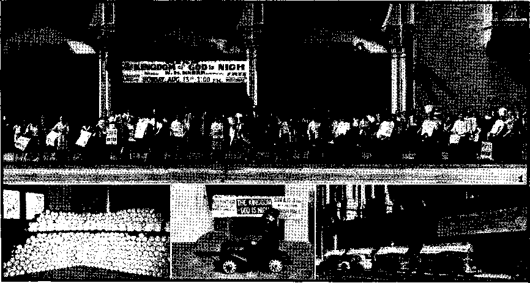
(1) "Advertising on wheels,” at Los Angeles assembly; (2) half of the 50,000 No. 543 Consolation used at Seattle; (3) a Seattle advertiser; (4) San Francisco advertising.
In Los Angeles an irate husband rushed into the hall during the Friday afternoon session for the; avowed purpose of beating his wife. As he spotted her an usher calmly advised, “You may start it, but you’ll not be able to finish it.” lie sank into a chair, nonplused. Tie listened. Tie listened again that evening. lie returned Saturday afternoon, to listen. That evening he listened some more. On Sunday morning he wanted to be immersed. .
Many readers of Consolation will recall the article in the July 19, 1944, issue with the questioning title, “Is Seattle Losing Iler Freedoms?” It described the religion-inspired acts of some of the city officials to forestall an assembly of Jehovah's witnesses there. But one was held. Three halls, in addition to the Kingdom Hall, were used and over 2,000 attended. One colored minister was so stirred by the mistreatment of the Witnesses that he came forward to offer free use of his church building if the seating space were needed. Incidentally, the successful 28
assembly added another sting to the already exposed religious freedomhaters by distributing 50,000 copies of the Consolation containing the expose.
The report from Dallas, Texas, described the intense pressure brought to bear against the president of the assembly place there. Threats even went so far as to include blowing up the building. But he stood by his contract. United States officers were called in to prevent any vandalism, and the assembly went through as scheduled. In Milwaukee, Wis., the "Witnesses did not find such integrity to promises. They had been assured use of the Xatatorium for immersion. At the last minute the common council of the city, by careful manipulating, crawfished out of the agreement. The Milwaukee river was used.
All in all, the opposition to the United Announcers’ Theocratic Assembly was negligible. And this in spite of the fact that in many of the convention cities the American Legion held state conventions^ simultaneously. They did hardly more than annoy, and that on the streets awmy from the Assembly
halls. A statement in the report from . Portland about sums up the weight they carry: “The only news item of interest concerning their convention that seems worthy of mention 'is the fact that the newsboys and bootblacks on seeing Legionnaires on the streets would say, ‘There go some Legionnaires (hid)’.” They are now well known by everyone.
Canada Participates
For the first time since July, 1940, when bans on free worship were invoked, Jehovah’s witnesses in Canada had the privilege of joining in with an international Theocratic Assembly. Two cities, Winnipeg and Vancouver, held five-day assemblies. One feature they missed, the releases. The Witnesses eagerly await the time when these publications will roll off Canadian presses. The attendance on Sunday at these two cities was an amazing coincidence: Winnipeg, 4,504; Vancouver, 4,502.
The lifting of the bans on Jehovah’s witnesses and the International ‘ Bible Students Association (previously reported in Consolation) will mean a great forward surge in gospel-preaching in Canada. Those two cities were the first to feel its incoming tide. For instance, it is cheering to learn that these assembly cities had the same litera-. ture to offer to the public as did their neighbors to the south. Just a few days before the convention opening the booklet Religion Reaps the Whirlwind and the book “The Truth Shall Make You Free” began rolling off the presses in Canada. Af^er four trialsome years the time had come for a better condition, better equipment, and that just in time for the 1944 Assembly. Praise Jehovah!
Do not think, however, that the number of Canadians participating in the United ■ Announcers’ Assembly is complete in those attending at these two cities. Far from it. Many crossed the border into the United States and assembled with Witnesses there. Border restrictions had been greatly eased just prior to convention time. Passports were now no longer necessary for persons born in Canada. More funds were available to each person visiting the United States. All this paved the way for large numbers to attend in the States, and particularly did a record crowd flock to the key-city7 assembly.
Thus has passed in review the United Announcer'S’ Theocratic Assembly as held in eighteen English-speaking cities of the Western Hemisphere. The unity therein exemplified is only7 a foretaste of the peace and tranquillity and unending unitedness lying beyond the portals of Jehovah’s glorious new w7orld. And it is near. Its invisible Kingdom is at hand; its “new7 earth” paradise lies just beyond approaching Armageddon’s storm. The pathway leading into it is illuminated by the truth light, and beckons to “men of good-will” who are sick of suffering and sin and death under Satan’s yoke. Thousands are taking that path. Thousands upon thousands more will join that living stream of refugees flowing unto Jehovah’s new world of perfect peace; and that, mind you, not a peace maintained by force. Bead:
“In the latter days it shall come to pass, that the mountain of Jehovah’s house shall be established on the top of the mountains, and it shall be exalted above the hills; and peoples shall flow unto it. And many nations shall go and say, Come ye, and let us go up to the mountain of Jehovah, . . . he will judge between many peoples, and will decide concerning strong nations afar off: and they shall beat their swords into plowshares, and their spears into pruning-hooks; nation shall not lift up sword against nation, neither shall they learn w7ar any more. But they shall sit every man under his vine and under his figtree; and none shall make them afraid: for the mouth of Jehovah of hosts hath spoken it.”—Micah 4: 1-4, Am. Stan. Ver.
The path is open to you. You may join the happy7 throngs treading it, if you like.
The Overcomer of Space and National Barriers
JEHOVAH GOD is no respecter of persons. Race or color does not call forth any discrimination on His part. Neither distant countries separated by .vast land areas nor continents with broad oceans intervening shorten the arm of the Almighty in serving His scattered yet united announcers the promised “feast of fat things”. (Isaiah 25:6) The uttermost parts of the earth are readily accessible to the omnipotent One whose organization reaches the farthest corners of an unbounded universe. Through His visible organization it pleased Him to reach out to far-off lands and continents and isles of the sea to gather them as one in the United Announcers’ Theocratic Assembly. White or black or brown, what difference the skin color to the Creator of all? Not through any inherent qualities, but only through His beloved Son Christ Jesus will any stand before Him. Understanding this, His servants on earth, chosen by Him from all nations, march side by side in ranks of unbroken unity; and this to the wonderment and amazement of a sin-ridden world divided by national and racial prejudices and selfish ambitions. Like their Great King, Jehovah’s united witnesses do not have respect of persons. All this was illustrated in the United Announcers’ Assembly.
As we look in upon the various assemblies in other lands, remember that the reports at hand and the space for reporting are limited. Hence our views for the most part will be little more than quick glances: but even these hurried glimpses will thrill the earthly servants of-the Lord to sec howT He united and fed them during this season of special feasting. First we turn our eyes northeastward and across thousands of miles of the restless Atlantic ocean, and let our gaze come to rest on
Sweden
Conditions in this country, as elsewhere in these perilous “last days” of Satan’s old world, are unsettled. Walking along a course of neutrality more ticklish than any tightrope,- Sweden has avoided a plunge into the global war that rocks the nations surrounding her. Still, local conditions made advisable a three-day instead of a five-day assembly. It was held on the days of August 11-13, and in six cities strategically placed in the strip-like country. Afore than 3,000 persons attended the assemblies, 241 symbolized their consecration by water immersion to do Jehovah’s will, and over 2,000 exemplified that will-doing by gospel-preaching work in the field. It was not possible to have the new releases which thrilled the conventioners in America, but Swedish assemblies did have releases to acclaim. They were: The Coming World Regeneration; Kingdom News No. 13; Course in Theocratic Ministry; three new recordings of the Society’s lectures. On release of the Theocratic Ministry booklet some joyfully remarked, “Now we will go home and attend our local Theocratic college course.” Jehovah saw to it that His announcers in Sweden feasted during the Assembly period.
Now let us shift our gaze down and to the west, and focus attention for a few fleeting moments on the
British Isles
Ten cities afforded good coverage of these isles, including the war-famous “Island Fortress” that withstood the demoniacal Nazi blitzes, and which has recently emerged triumphant though battle-scarred from the horrors of the uncanny robot-bomb attacks. Despite the ravages of total war and civilian regimentation, Jehovah God spread the feast for His servants and “men of good-will” in these isles. Cities tied in with the Assembly were Belfast, Birmingham, Bradford, Bristol, Cardiff, Derby, Glasgow, London, Northampton, and Stockport.
The peak attendance for the ten cities combined was 14,492. This was on the occasion of the public lecture “The Kingdom of God Is Nigh”. This lecture, however, was not widely advertised, only letters to specially interested ones being sent out. Limited hall accommodations dictated this curtailment of public advertising. It seems that the robot bombs have had their effect, and that things do not proceed “as usual”. All the more glory to Jehovah, who made the assemblies possible I
“The abundant spiritual food provided was indeed a 'feast of fat things’,” writes one attender. Announcements of the releases made in America thrilled the British Witnesses and left them in a state of keen expectation, awaiting the time when they could get hold of them also. But they had four releases themselves: 'The Coming World Regeneration, Religion Reaps the Whirlwind, Kingdom News No. 12, and Watchtower Bible Study Series No. 11 (the latter corresponds with the Watchtower magazine). Number immersed, 666,
It would be like pushing oneself away from the table just as the dessert is brought on for us to set aside untasted the fine reports from each of the ten cities. That cannot be done. So let local color and refreshment be added to this account by a few nibbles at these individual city reports. The following remarks made to magazine publishers on the streets of Birmingham brightened their service: “We all need more of this. They do not explain the Bible to you in church today. If you will send someone along I would like a study.” “The people are sick of religion and the parsons, with their unreasonable and unsound doctrines.” “I am a Methodist and I believe what is on that card, ‘The Kingdom of God Is Nigh’; and I must say that I admire you people for the bold way in which you go about your work. I am afraid we do not study the Bible like you. We only read it and put it on one side.”
Some of the cities had interesting experiences in arranging for meeting places. Bristol assembled in tents. After cancellation of one field, another was secured from a young farmer. Religious falsifiers got busy, and in a few hours he canceled and declared he would not have such people for £2,000! Religion’s triumph was short-lived. Explanations swept aside his objections and the tents were erected on a three-acre plot. A perfect week of weather graced the countryside and made ideal the tent assembly. On the second day a fire mysteriously broke out in the farmer’s adjoining cornfield. A bucket brigade of Witnesses quickly quenched the blaze, and a grateful farmer was glad he did not listen to the lies of religionists. Before leaving Bristol it is remarked that winged assailants, not Nazi airmen, added liveliness to the assembly. A swarm of wasps inflicted over 250 stings for the convention hospital to treat.
A curious chain of events led to the securing of a hall in Stockport (near Manchester). Three months prior to convention a young pioneer (full-time gospel-preacher) girl appeared in court for refusing a direction to employment. One of the magistrates, Aiderman Royle, J. P., fully agreed with her claim of divine ordination and publicly withdrew from the bench rather than pass sentence on her. Now convention time comes, and Hall renting. One place is ideal, the Centenary Hall. On previous occasions it had not been available to Jehovah’s witnesses. But application was made anyway. And it was obtained! Why so? In charge of its rental was the freedom-loving magistrate!
One last glance at the British Isles assemblies; this time, London, Droves of flying bombs were wreaking havoc on a large scale, but, trusting in the protection of Jehovah, assembly arrangements were made. The only one of these diabolical contraptions that appeared anywhere near the hall fell early
OCTOBER 25, 1844
31